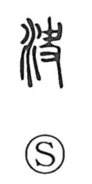

決

Kun: kimeru, kimaru, kiru | On: ketsu
to decide ・ to determine ・ to resolve ・ to cut open ・ to drain
Explanation
決 combines 水, water, with the sound-bearing 夬. In 夬, a hand holds a jade ring with an opening cut into it. Such a piece could be worn at the waist and used as a cutting implement. Its broken circumference gives the sense of cutting through or opening a gap.
With water added, 決 means to cut an outlet and release water that has collected behind an obstruction. A deliberate opening in a bank lets the water escape before it causes a greater flood. Cutting through an obstruction also supplies the movement behind ‘decide’: bringing an unsettled matter to a definite conclusion, resolving a difficulty, or settling what is to be done.